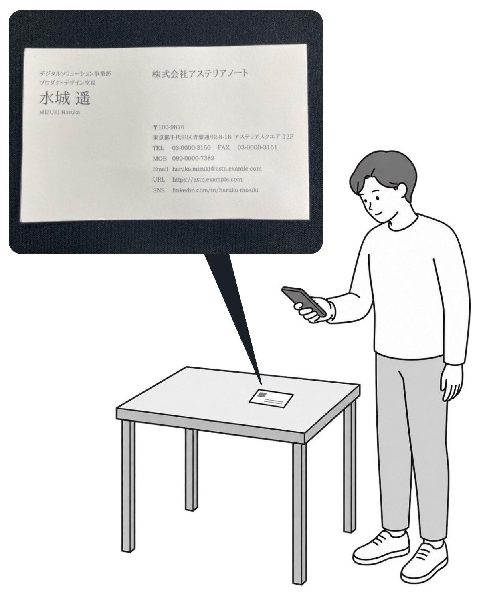

よくある質問
用紙の種類やサイズや仕様について教えてください。
コンビニ名刺王ではA4サイズ光沢紙にプリント(1枚400円)を行います。
コンビニ名刺王で作成できる全ての名刺がA4サイズ光沢紙1枚にプリントされます。
（厚み 採用している光沢紙の紙厚は、0.157mmの仕様となっています。（通常のコピー用紙は、0.09mm程度。））
標準名刺【片面】 縦:55mm 横:91mm 10枚分
標準名刺【両面】 折って縦:55mm 横:91mm 10枚分
スクエア名刺 縦:63mm 横:62mm 12枚分
また、光沢紙の厚みは0.157mm（普通紙の厚みは0.09mm程度です。）

標準名刺【片面】

標準名刺【両面】横向き

スクエア名刺【片面】
切り取り線とトンボについて
お客様ご自身で10枚に切っていただく際、切り取り線が入っていると名刺自体に線が残ってしまうため、用紙の外周に「トンボ」線のみを入れております。
カッター、定規などを使用してなど利用して、用紙の外周の「トンボ」線を結ぶ直線でのカットをお試しください。
画像 de 名刺機能で名刺の四隅が認識されない
画像 de 名刺機能にてお手元の名刺を写真撮影する際、白い名刺を白いテーブルなどに置いて撮影してしまうと名刺の四隅決定処理がうまくいかない場合があります。
白い名刺は黒色系のテーブルなどに置いてお試しください。
また、写真撮影をする際名刺に影が掛からないようにすることで名刺の四隅決定処理の精度はさらに上がります。

手持ちの名刺を読み込む機能でのデータの取り扱いについて
マイプロフィールデータを入力する際、手持ちの名刺を読み取る機能では名刺画像をサーバーで受けとって文字認識しています。
文字認識処理終了後、名刺画像と文字認識結果はサーバーから削除しています。
スマホアプリから作成したデータに有効期限はありますか。
スマホアプリから作成したデータは、作成日から1年間が有効期限です。
有効期限を越えたデータはサーバーから削除するため、プリント番号が無効になります。
マイプロフィールデータをバックアップできないの？
アプリ内の設定から「マイプロフィールをバックアップ」を実行することでバックアップファイルを作成することができます。
作成したバックアップファイルは機種変更などの際にご利用いただくことで、バックアップから復元が可能です。
バックアップファイルはご自身での管理をお願いしています。
名刺内に記載する個人情報の取り扱いは
コンビニ名刺王においてお客様が入力いただいた文字絵列の個人情報（マイプロフィールデータ）は、お客様のスマートフォン内部のみに保存する仕様となっており、サーバーにてマイプロフィールデータの保存を行っておりません。
読み取りOCRでも 画像はサーバーへ送信され、画像解析していますが 解析処理終了時にデータを削除しております。
プロフィール画像、ロゴ画像につきましては画像データをサーバーにて保存しています。これは名刺編集において処理を高速化するための仕様です。
また、お客様に作成いただいた名刺の印刷データも画像形式でサーバーにて保存しています。これはコンビニ各店へ印刷データとして配信するための仕様です。
コンビニ名刺王サービスを通じてお客様が作成した名刺画像、顔写真その他の画像データを、生成AIその他の機械学習モデルの開発、学習または精度向上を目的として利用することはありません。
また、お客様の画像データを第三者に提供することはありません。
本会員登録せずに利用した場合に使用上の制限事項はありますか。
アプリケーションの利用については本会員登録をしても、しなくてもコンビニ名刺王では機能上の違いはありません。
本会員登録を行っていただきますと、ログインのための BiziCard IDが登録可能です。
(ログインIDにはメールアドレスを利用し、パスワードはご自身でお好きなものを設定して登録いただけます。)
BiziCard IDを使用してログインしていただくことで、入力したマイプロフィールデータ以外のアップロードした画像や作成したコンテンツが他機種間で利用可能になります。
コンビニ名刺王データの削除について
作成済みの名刺データはキャビネットから個別に削除いただくことで、サーバーから削除されます。
本会員登録していない状態で、退会ボタン【データを削除して退会する】を押していただきますとコンビニ名刺王サービスから退会となります。
本会員登録している状態でコンビニ名刺王を含むビジカプリントサービスご利用を停止したい場合は設定画面から「退会」を押すことで退会処理を進めることができます。
退会するとデータはすべて削除され元に戻すことはできません。
データはサーバー上で物理削除を行います。
スマートフォンアプリのコンビニ名刺王をアンインストールしただけでは退会とはならず、作成されたデータ等はサーバー上に残ったままとなりますのでご注意ください。
※本会員登録してご利用の場合の作成されたデータはキャビネットから個別に削除いただくことで、サーバーから物理削除されます。
退会について教えてください。
本会員登録していない状態で、退会ボタン【データを削除して退会する】を押していただきますとコンビニ名刺王サービスから退会となります。
本会員登録している状態でコンビニ名刺王を含むビジカプリントサービスご利用を停止したい場合は設定画面から「退会」を押すことで退会処理を進めることができます。
BiziCard IDの退会(ユーザーアカウントの削除について)
「BiziCard ID」は、ビジカプリントサービスで提供しているサービス（BiziCard、コンビニシール倶楽部、コンビニビジ文字プリントなど）を横断して1つのIDでログイン／ご利用いただけるアカウントサービスです。
コンビニ名刺王においても、本会員登録を行っていただくことで「BiziCard ID」を取得していただくことが出来るようになっています。
また、上記他のサービスにて取得いただいた「BiziCard ID」を使用してコンビニ名刺王にログインいただくことも出来ます。
この「BiziCard ID」を削除した場合には、「BiziCard ID」でログインしてご利用になられている全てのサービスが利用できなくなると共に、それぞれのサービスでお客様自身が作成になられたコンテンツが全て削除され、復元できない状態となります。
「BiziCard ID」の削除を行いたい場合はこちらのアカウントサービスからお手続きをお願い致します。
マルチコピー機の領収書はインボイス(適格請求書)対応されていますか
インボイス（適格請求書）対応の領収証を発行しているコンビニエンスストアは「ファミリーマート」になります。
領収書にインボイス番号の記載がないため、インボイス番号付きの領収書がほしいです。
ご利用料金の徴収及び領収書の発行は弊社ではないため、対応することが出来ません。
ご購入されたコンビニ店頭のレジにてご相談をお願い致します。
光沢紙ではなく普通紙で印刷出力されてしまいました
コンビニのマルチコピー機に【A4光沢紙】が正しくセットされておらず普通紙にプリントされるケースが稀にございます。
その際はプリントされた実物をコンビニで見ていただき、【A4光沢紙】が正しくセットされたプリントであるかどうかをコンビニ店舗にて確認していただきますよう、お願い致します。
まれに【A4光沢紙】の裏表が間違えてセットされている場合もありますので、同様にコンビニ店舗にて確認していただきますよう、お願い致します。
プリントアウトされたものがおかしい(印刷不良など)
ご購入されたコンビニ店頭のレジにて返品（返金）のご相談をお願い致します。
その際、領収書をお持ちの上、ご購入頂いた店舗の店員へお申し出ください。
また、画像の画質・色調等を理由にした返金や、誤った商品を購入したことによる返品（返金）はいたしかねますので、予めご了承ください。